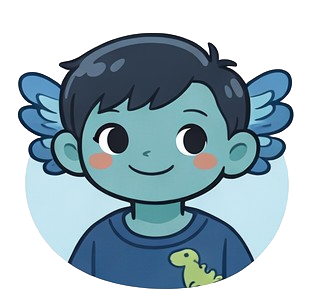

Die Kita —
wo alles beginnt
Neue Gesichter, bunte Farben, der Morgenkreis und manchmal einfach zu viel auf einmal. Begleite den Lernolotl durch seine ganz besondere Kita-Welt.

Für Kinder von 3–6 Jahren. Geschichten, die zeigen: Es ist okay, wenn Neues sich komisch anfühlt. Und dass man trotzdem — oder gerade deswegen — wunderbare Freundschaften schließen kann.
Die Kita ist für den Lernolotl magisch — und manchmal auch ganz schön viel
Für viele Kinder ist die Kita der erste große Ort außerhalb der Familie. Für den Lernolotl ist es ein Ort voller Wunder — und voller Herausforderungen, die er erst langsam verstehen lernt.
Im Morgenkreis, beim Frühstück, auf dem Spielplatz — manchmal sind einfach zu viele Geräusche auf einmal da. Der Lernolotl lernt, das zu benennen und sich zu helfen.
Was macht einen Freund aus? Wie fragt man, ob man mitspielen darf? Und was ist, wenn ein neues Kind kommt, das allein am Rand steht? Der Lernolotl fragt sich das wirklich.
Heute kein Außenspielen, weil es regnet. Die Lieblingsecke ist besetzt. Der Lernolotl mag gerne wissen, was als Nächstes kommt — und übt, Überraschungen zu mögen.
Puzzles lösen, Bücher kennen, Muster finden — in der Kita merkt der Lernolotl, was er richtig gut kann. Und dass das andere Kinder beeindruckt.
Die Kita-Crew
In der Kita ist der Lernolotl nicht allein. Diese besonderen Menschen und Freunde begleiten ihn durch seinen Alltag:

Frau Brandt hat immer Zeit zum Zuhören. Sie erklärt Regeln so, dass der Lernolotl sie wirklich versteht — nicht nur hört. Und sie findet heraus, was jedes Kind besonders gut kann.
Liebt Origami & Puzzle-Wettbewerbe
Mia redet viel und lacht noch mehr. Sie hat den Lernolotl als Erstes gefragt, ob er mitspielen möchte — einfach so. Sie mag keine Ungerechtigkeit und sagt das auch sehr laut.
Liebt Pferde & selbst gemalte Bilder
Ben ist ruhig wie der Lernolotl, aber aus anderen Gründen: Er denkt einfach sehr gern nach. Zusammen bauen sie die kompliziertesten Turm-Konstruktionen der ganzen Kita.
Liebt Dinosaurier & große BausteineLernolotl in der Kita — alle 10 Geschichten
Zehn Geschichten aus dem echten Kita-Alltag des Lernolotl. Kostenlos lesen — mit optionalen Lernmaterialien für zu Hause und die Kita.
Jeden Morgen sitzen alle Kinder zusammen im Kreis. Singen, klatschen, reden — für viele ist das schön. Für den Lernolotl ist es manchmal sehr, sehr laut. Bis Frau Brandt eine Idee hat, die alles verändert.
Mia und Ben spielen Drachen und Ritter. Der Lernolotl möchte auch mitspielen — aber wie fragt man das eigentlich? Er hat den Satz fünfmal im Kopf geübt, bevor er ihn sagt. Was dann passiert, überrascht ihn sehr.
Jeden Morgen geht Mama. Der Lernolotl weiß, dass sie wiederkommt — aber sein Bauch weiß das manchmal noch nicht. Eine Geschichte über Abschiede, Rituale und die kleine Zeichnung in der Kitteltasche.
Heute sollte ein Ausflug sein. Der Lernolotl hat sich seit Tagen darauf gefreut — und sich alles ganz genau vorgestellt. Dann kommt Frau Brandt und sagt: Es regnet. Wir bleiben da. Was dann passiert, übt er noch heute.
Der Lernolotl hat das beste Puzzle genommen — das mit den 48 Teilen. Dann kommt Ben und möchte auch. Teilen klingt einfach. Aber wenn man mittendrin ist, ist es das manchmal gar nicht.
Ein neues Kind ist in der Gruppe. Es steht allein am Rand. Der Lernolotl kennt dieses Gefühl noch sehr gut. Er weiß, wie sich das anfühlt — und überlegt, ob er etwas sagen soll.
Heute gibt es Gemüsesuppe. Der Lernolotl mag keine Gemüsesuppe — nicht weil er schwierig ist, sondern weil der Geruch sich falsch anfühlt. Frau Brandt versteht das. Und Mama erklärt, warum das so ist.
Manchmal fangen die Augen einfach an zu weinen. Kein Sturz, kein Streit — einfach so. Das ist dem Lernolotl peinlich. Bis Frau Brandt erklärt, dass das ein Zeichen ist, kein Fehler.
Die Ruhestunde. Alle Kinder sollen schlafen. Der Lernolotl kann aber nicht einfach schlafen, nur weil es jetzt Schlafenszeit ist. Sein Kopf denkt weiter. Frau Brandt hat einen Plan dafür.
Bald kommt die Schule. Der Lernolotl weiß das schon lange — aber jetzt ist es wirklich bald. Frau Brandt, Mia, der mintgrüne Punkt. All das wird dann anders sein. Eine Geschichte über Abschiede, die gleichzeitig Anfänge sind.
Für Eltern & Erzieher:innen
Diese Geschichten sind bewusst aus der Perspektive eines Kindes geschrieben, das die Welt intensiver wahrnimmt als andere. Ob euer Kind eine Diagnose hat oder nicht — die Themen Abschied, Freundschaft und laute Räume kennen fast alle Kita-Kinder.
- Gesprächsanregungen nach dem Vorlesen enthalten
- Gefühle benennen lernen — kindgerecht erklärt
- Optionale Arbeitsblätter für Kita & zu Hause
- Erprobt in echten Kita-Situationen
- Keine Diagnose nötig — für alle Kinder
- Inklusiv & wertschätzend formuliert
Bereit für den ersten Kita-Tag?
Starte direkt mit der ersten Geschichte — kostenlos, ohne Anmeldung. Einfach vorlesen und gemeinsam entdecken.